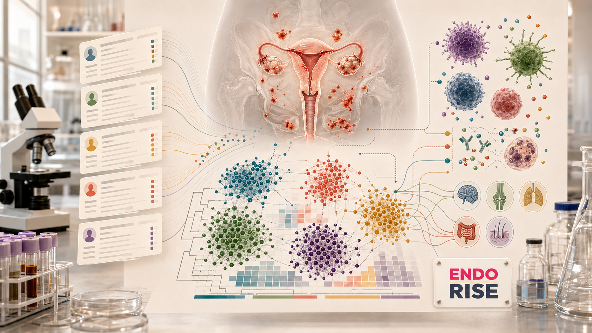
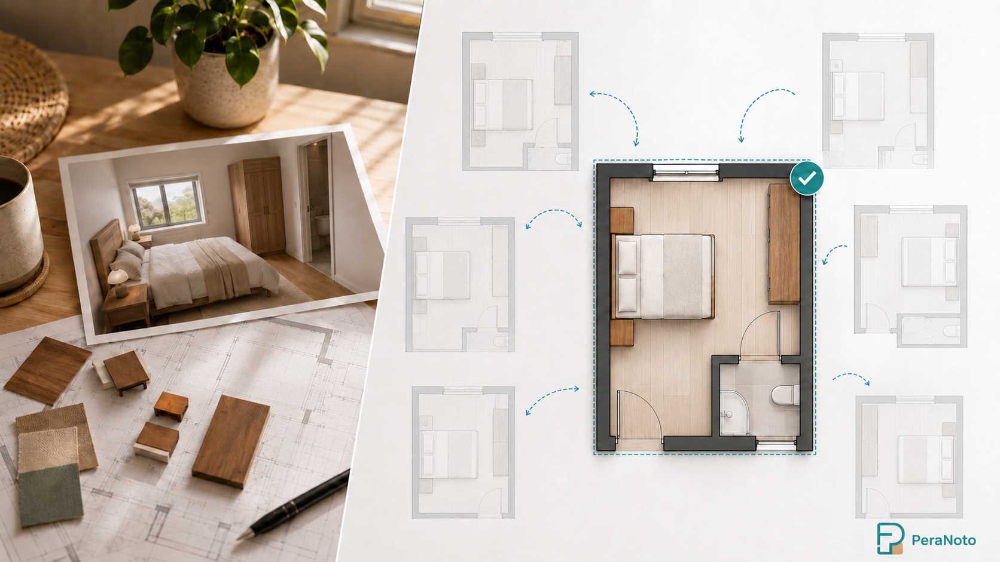
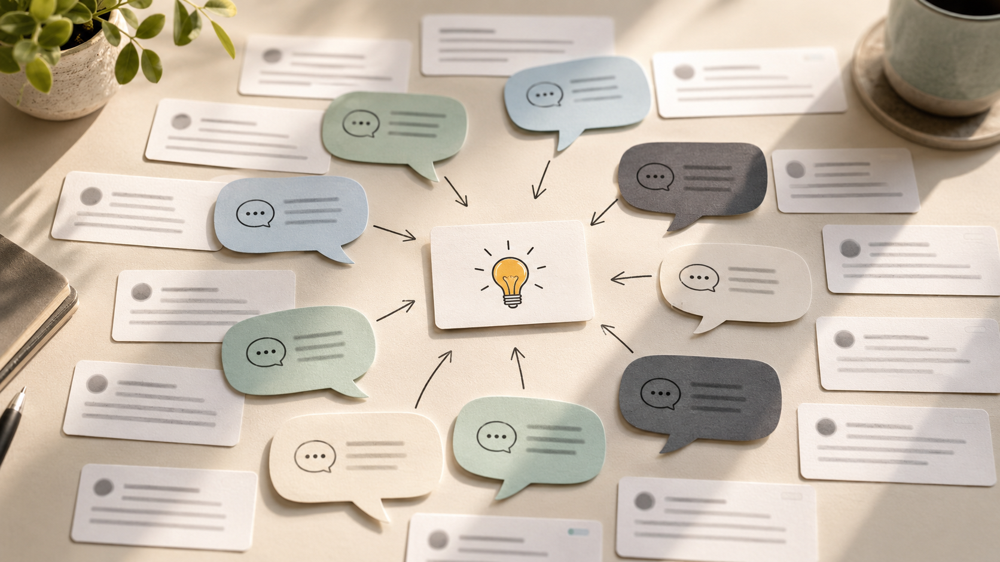

Portfolio
Research

In Progress
EndoRISE
ML pipeline for endometriosis research at The Jackson Laboratory
Completed
Hybrid Image Classification
Facilitating interdisciplinary AI/neuroscience research in the task of hybrid image recognition

Completed
PeraNoto
AI-driven evolutionary optimization for architectural space planning
Professional
Shipped
App Store Recommendation System
Personalized app discovery at scale using Wide & Deep neural networks — Autodesk App Store

Shipped
GenAI-Powered Voice of Customer Analytics
BERTopic to RAG — evolving support intelligence at scale at Autodesk
Shipped
API Log Compression
High-performance API log compression framework at Autodesk